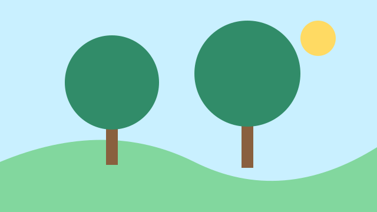

Дерева в нашому місті
Авторський навчальний матеріал для квесту «Врятуй цифрову виставку».

Дерева є живими організмами. Вони потребують води та світла. Міські дерева дають затінок і є середовищем для інших організмів.
Текст та ілюстрація: Майстерня ЦифроПомочі. Ліцензія CC BY 4.0. Можна поширювати й адаптувати за умовами цієї ліцензії: зазначити автора, джерело, ліцензію та внесені зміни. Ці умови стосуються саме матеріалів цієї сторінки.
Ілюстрація схематична.
Повернутися до квесту